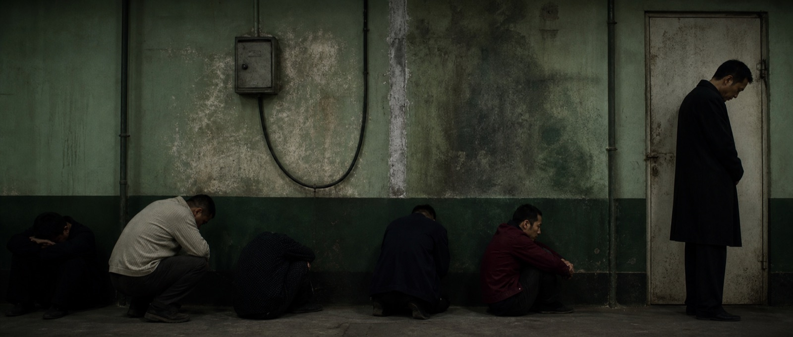

Latest / Phase 02
《老男孩》走廊镜头
当前锁定 24mm 低畸变侧视、2.35:1 横向构图、白色顶光与局部青绿墙面反射。Text Round 02 只改四组变量：曝光、色彩、动作余波、结构锐度。
生成服务在本轮发生网络故障，A/B 请求均未产生输出，C 未提交，因此没有把旧图冒充新结果。这里展示最近一次有效的 Text Round 01 B 测试图。
查看镜场计划完整记录 ↗Visual Research Lab
不是“找几张参考图”，而是把视觉拆解、Prompt、单变量测试、失败证据与可复用结论放进同一套研究档案。

Latest / Phase 02
当前锁定 24mm 低畸变侧视、2.35:1 横向构图、白色顶光与局部青绿墙面反射。Text Round 02 只改四组变量：曝光、色彩、动作余波、结构锐度。
生成服务在本轮发生网络故障，A/B 请求均未产生输出，C 未提交，因此没有把旧图冒充新结果。这里展示最近一次有效的 Text Round 01 B 测试图。
查看镜场计划完整记录 ↗